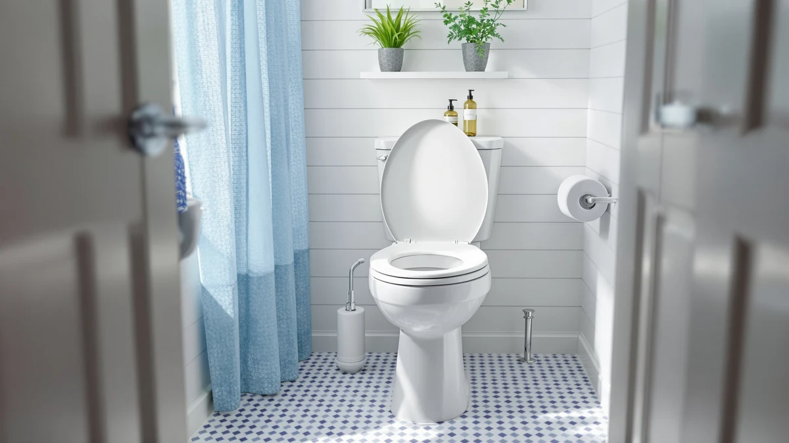

How to Fix a Squeaky Toilet Seat in Under 10 Minutes (2026)
Prices and picks verified as of August 2026. Independent, reader-supported reviews.


Things to Know Before You Buy
- Most squeaks come from dry or dirty hinge pivots, not from a failing bowl or a plumbing problem.
- You can fix the vast majority of squeaky seats with a wrench, a screwdriver, and lubricant in under 15 minutes.
- Household oils like WD-40 mask the noise briefly but attract grit that makes the squeak return faster.
- If the hinge posts are cracked or the plastic has warped, lubrication will not solve the problem permanently.
- A worn-out hinge assembly usually costs less to replace with a new seat than to keep repairing.
Figuring out how to fix a squeaky toilet seat comes down to one small, overworked part: the hinge. Every time you sit down, stand up, or lower the lid, the seat pivots on two plastic or metal posts, and once those posts dry out or collect grime, they start grinding instead of gliding.
The fix rarely requires new parts. In most bathrooms, tightening the mounting bolts and lubricating the hinge points quiets the seat for months, and the whole job takes about 15 minutes with tools you likely already own. Below is the exact sequence to work through, along with the signs that tell you when a repair is not enough and a replacement seat is the better move.
What You'll Need
Every item below is sold at any hardware store, and most homes already have the tools on hand to quiet a squeaky hinge without a trip to the store.
- Supplies: white lithium grease or silicone lubricant, replacement rubber or felt hinge washers, a microfiber cloth and mild soap
- Tools: an adjustable wrench or pliers, a Phillips or flathead screwdriver
Step 1: Find where the squeak is coming from
Before you tighten or lubricate anything, confirm the noise is actually the hinge and not something else entirely. Sit down slowly, then rock side to side and lift the seat up and down a few times while you listen closely at each hinge point.
A hinge squeak sounds like plastic grinding on plastic, sharp and consistent with every movement. If you hear a duller creak from underneath the bowl instead, the mounting bolts securing the whole seat to the porcelain may be loose, which is a related but different fix. Isolating the source now saves you from lubricating a joint that was never the problem.
Step 2: Remove the seat and clean the hinge posts
Most modern seats have hinge caps that flip open or press-release buttons on top of each hinge. Open them, and the seat lifts straight off the mounting posts without tools. On older hardware, you may need to unscrew a bolt underneath the bowl first.
With the seat off, wipe down both the hinge posts on the bowl and the hinge sockets on the seat with a damp microfiber cloth and a drop of mild soap. Bathrooms are humid, and that moisture combines with dust to form a fine grit inside the hinge barrel over time. That grit, and not only dryness, is often what turns a quiet hinge into a squeaky one.
Step 3: Tighten the hinge bolts
While the seat is off, check the mounting bolts underneath the bowl rim. Hold the bolt head steady with a screwdriver from above and turn the wing nut below with an adjustable wrench or pliers until the seat no longer wobbles side to side.
A seat with even slight play at the base flexes with every shift in weight, and that flex transfers stress onto the hinge pivots, which accelerates wear and brings the squeak back sooner. Snug the bolts firmly, but stop before you crack the plastic mounting bracket, since overtightening is a common and avoidable mistake here.
Step 4: Lubricate the hinge pivots
Apply a thin coat of white lithium grease or a silicone-based lubricant directly to the pivot pins and the inside of each hinge socket. A small dab goes a long way, and excess grease drips and collects more dust later.
Skip cooking oil, petroleum jelly, or spray lubricants like WD-40 for this step. Those products are solvents built to loosen rust and displace water, not to lubricate long term, so they evaporate within days and let the squeak creep back in. White lithium grease and silicone lubricants are formulated to resist washing out in a humid bathroom, which is why they hold up for months instead of days.
Step 5: Reassemble and test the seat
Slide the hinge sockets back onto the posts until they click into place, then snap the hinge caps shut. Cycle the seat up and down and side to side a dozen times to work the lubricant into the joint evenly before you consider the job finished.
If the squeak is gone, you are done. If a faint noise remains, add a touch more lubricant and repeat the motion. A squeak that persists after two rounds of grease usually points to worn hinge washers rather than a dry joint, which means it is time to replace the washers or, if the hinge itself is cracked, the whole seat.
Common Mistakes to Avoid
The most common mistake when people try to fix a squeaky toilet seat is reaching for whatever spray lubricant is under the sink. WD-40 and similar penetrating oils dissolve grime well, but they are not designed to stay put. Within a week the lubricant evaporates, the dust it loosened settles back into the hinge, and the squeak returns louder than before.
Overtightening the mounting bolts is another frequent error. Toilet seat hardware is usually plastic, and cranking a wrench down as hard as it goes can crack the mounting bracket or strip the bolt threads. Snug the bolts until the wobble stops, then stop turning.
Some people also skip cleaning the hinge before lubricating it, which traps the existing grit under a layer of grease and creates a gritty paste that grinds even more than dry plastic would. Always wipe the hinge posts clean first, then apply lubricant to a dry, grit-free surface.
Finally, be careful about which lubricant touches the seat. Petroleum-based products can degrade some plastic and rubber seat components over time, causing the material to soften or discolor around the hinge. Stick to white lithium grease or a silicone lubricant rated for plastic, since both hold up in bathroom humidity without breaking down the seat itself.
Our Top Picks
If you have already tightened, cleaned, and lubricated the hinges and the squeak keeps coming back, the hinge hardware itself has likely worn out. Replacing the seat resets the problem instead of patching it every few months, and these three options each use hinge designs built to stay quiet longer than the stock seat that came with most toilets.

Editor's Pick
Mayfair Linden Slow Close Toilet
Mayfair built this seat with a whisper-close hinge that lowers on its own, and owners report the pivot stays quiet for years without added lubricant.
$39.99
Check Price on Amazon
Best Value
KOHLER Cachet ReadyLatch Round Toilet
KOHLER's ReadyLatch hinge snaps on without tools, and reviewers consistently note it holds up better against squeaking than the metal-hinge seats it replaces.
$56.40
Check Price on Amazon
Premium Choice
Mayfair Cassel Slow Close Toilet
This Mayfair model pairs a slow-close hinge with quick-release buttons, making it easy to lift off and clean the exact area where squeaks start.
$36.99
Check Price on AmazonFrequently Asked Questions
Why does my toilet seat squeak only when I sit down?
Weight on the seat pushes the hinge pins against dry or dirty plastic, which is when friction peaks and the squeak is loudest. The same joint may stay silent when the seat swings freely because there is no downward pressure on the pivot.
Can WD-40 fix a squeaky toilet seat?
It can quiet the hinge for a few days, but WD-40 is a solvent, not a long-term lubricant, and it evaporates while attracting dust. White lithium grease or a silicone-based lubricant holds up far longer in a bathroom's humidity.
How do I know if I need a new toilet seat instead of a repair?
If the hinge posts are cracked, the plastic has warped, or the squeak returns within days of lubricating and tightening it, the hinge hardware has likely worn out. At that point a replacement seat costs less than repeat repairs.
Do I need to turn off the water to fix a squeaky hinge?
No. The hinge sits above the bowl rim and has no connection to the water supply or tank, so you can work on it without shutting off any valves. This repair is purely mechanical.
Is it normal for a brand-new toilet seat to squeak?
A light squeak in the first few weeks is common, since factory-applied grease on the hinge pins wears thin quickly under regular use. Adding a small amount of silicone lubricant to the pivot points usually resolves it within minutes.
Verdict
Learning how to fix a squeaky toilet seat rarely requires a new part or a service call. In most bathrooms, the noise traces back to dry or dirty hinge pivots, and cleaning, tightening, and lubricating those pivots resolves it in about 15 minutes for less than $10 in supplies. Work through the five steps in order, since skipping the cleaning stage or reaching for the wrong lubricant is why so many DIY fixes fail within a week.
If you have gone through the full process twice and the squeak keeps returning, the hinge hardware itself is likely worn past the point of repair rather than dirty. At that stage, replacing the seat is the more practical fix. A Mayfair slow-close seat with a sealed hinge design is a reasonable upgrade if your current seat has reached that point, since it addresses the mechanical wear that lubricant alone cannot fix.